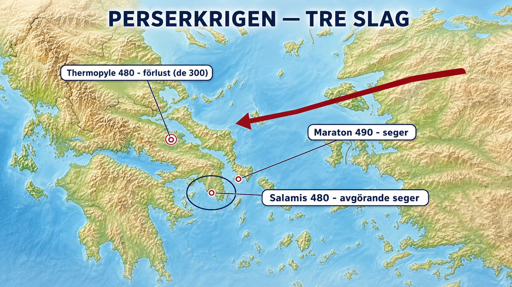

Standardtexten nämner slaget vid Maraton år 490 f.Kr., då Aten slog tillbaka en persisk armé. Men det var bara början. Tio år senare kom perserna tillbaka, större och argare — och då utspelade sig en av historiens mest berättade strider: de 300 spartanerna vid passet Thermopyle. Det är en fantastisk historia. Den är också ett bra exempel på hur en berättelse kan bli mer känd än det som faktiskt avgjorde kriget.

Vad som hände. År 480 f.Kr. tågade den persiske storkonungen Xerxes in i Grekland med en väldig här. Vid Thermopyle, ett smalt pass mellan berg och hav i norra Grekland, ställde sig en liten grekisk styrka i vägen. Det trånga passet var nyckeln: där kunde perserna inte utnyttja sin överlägsna mängd, för bara några få kunde slåss sida vid sida åt gången. I spetsen stod Spartas kung Leonidas. I flera dagar höll grekerna passet mot en enormt mycket större armé — tills en grek visade perserna en hemlig stig runt berget. Omringade och förrådda stannade Leonidas och hans spartaner kvar och stred till sista man.
Men "de 300" är inte hela sanningen. Berättelsen handlar nästan alltid om exakt 300 spartaner. I själva verket kämpade tusentals andra greker där också — bland annat sjuhundra man från staden Thespiai som stannade och dog tillsammans med spartanerna, men som nästan aldrig får vara med i berättelsen. Och de 300 var den spartanska kärnan, en eftertrupp som höll ställningen medan andra drog sig tillbaka. Att bara minnas de 300 gör historien renare och mer gripande — men det suddar bort alla de andra som var där.
Och Thermopyle var faktiskt en förlust. Här kommer det märkliga. Grekerna förlorade vid Thermopyle. Perserna tog passet, tågade vidare och brände till och med Aten. Det som verkligen räddade Grekland kom strax efteråt och till havs: i sjöslaget vid Salamis lurade den atenske ledaren Themistokles in den stora persiska flottan i ett trångt sund, där de grekiska skeppen kunde krossa den. Det var Salamis, inte Thermopyle, som knäckte perserinvasionen. Ändå är det Thermopyle och de 300 alla minns.
Varför minns vi förlusten men inte segern? Det är den intressanta frågan. Svaret säger något om hur människor berättar historia: en hjältemodig, hopplös strid till sista man rör oss djupare än en smart taktisk sjöseger. Uppoffringen gör berättelsen. Vi minns det vackra nederlaget hellre än den avgörande vinsten. Det är värt att lägga på minnet nästa gång en historia känns "för bra för att vara sann" — ofta har den slipats i berättandet tills den blivit mer symbol än rapport.
En påminnelse om källorna. Nästan allt vi vet om perserkrigen kommer från en enda grek, historikern Herodotos, som skrev decennier efteråt och gärna berättade en god historia. Det betyder inte att han hittade på — men det betyder att vi ser kriget genom grekiska ögon, från vinnarnas (och de heroiska förlorarnas) sida. Perserna, som också var ett rikt och avancerat folk, får sällan berätta sin version.
Det viktiga bortom dramatiken knyter tillbaka till avsnittets kärna: perserkrigen visar att de splittrade, ständigt rivaliserande stadsstaterna faktiskt kunde enas — när hotet var stort nog. Aten och Sparta, varandras motsatser, stod på samma sida mot Xerxes. Men det var undantaget, inte regeln. Så snart den gemensamma fienden var borta vände grekerna vapnen mot varandra igen — och dit är en senare djupdykning på väg.